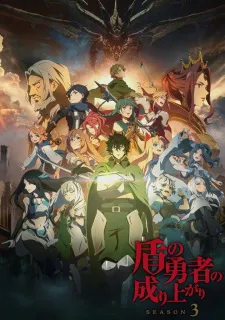

Tate No Yuusha no Nariagari Season 3
Completed - 9/12

Tate no Yuusha no Nariagari Season 3 Episode 12 English Subbed
Eps 12 - December 22, 2023
Tate no Yuusha no Nariagari Season 3 Episode 11 English Subbed
Eps 11 - December 15, 2023
Tate no Yuusha no Nariagari Season 3 Episode 3 English Subbed
Eps 10 - December 8, 2023
Tate no Yuusha no Nariagari Season 3 Episode 9 English Subbed
Eps 9 - December 1, 2023
Tate no Yuusha no Nariagari Season 3 Episode 8 English Subbed
Eps 8 - November 27, 2023
Tate no Yuusha no Nariagari Season 3 Episode 7 English Subbed
Eps 7 - November 27, 2023
Tate no Yuusha no Nariagari Season 3 Episode 6 English Subbed
Eps 6 - November 27, 2023
Tate no Yuusha no Nariagari Season 3 Episode 5 English Subbed
Eps 5 - November 27, 2023
Tate no Yuusha no Nariagari Season 3 Episode 4 English Subbed
Eps 4 - November 27, 2023
Tate no Yuusha no Nariagari Season 3 Episode 3 English Subbed
Eps 3 - November 27, 2023
Tate no Yuusha no Nariagari Season 3 Episode 2 English Subbed
Eps 2 - November 27, 2023
Tate no Yuusha no Nariagari Season 3 Episode 1 English Subbed
Eps 1 - November 27, 2023